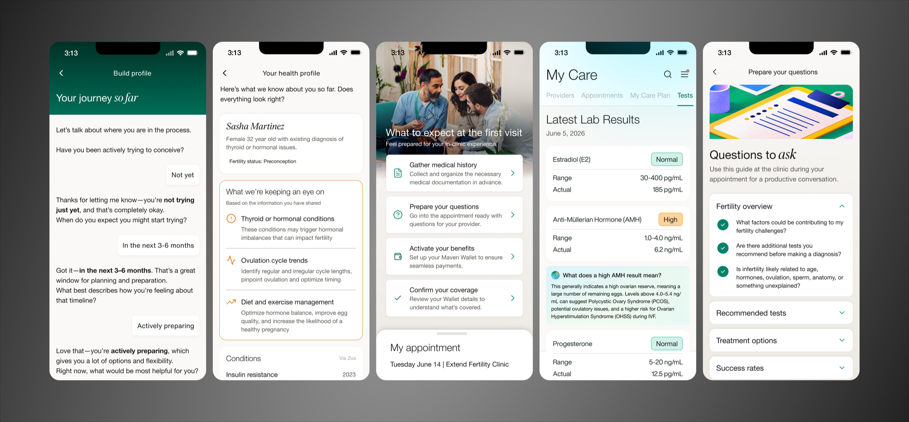
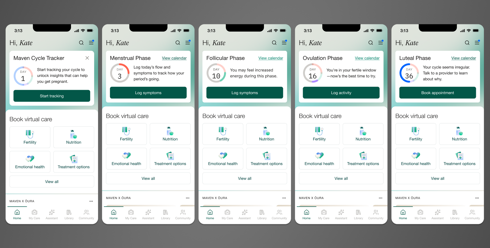
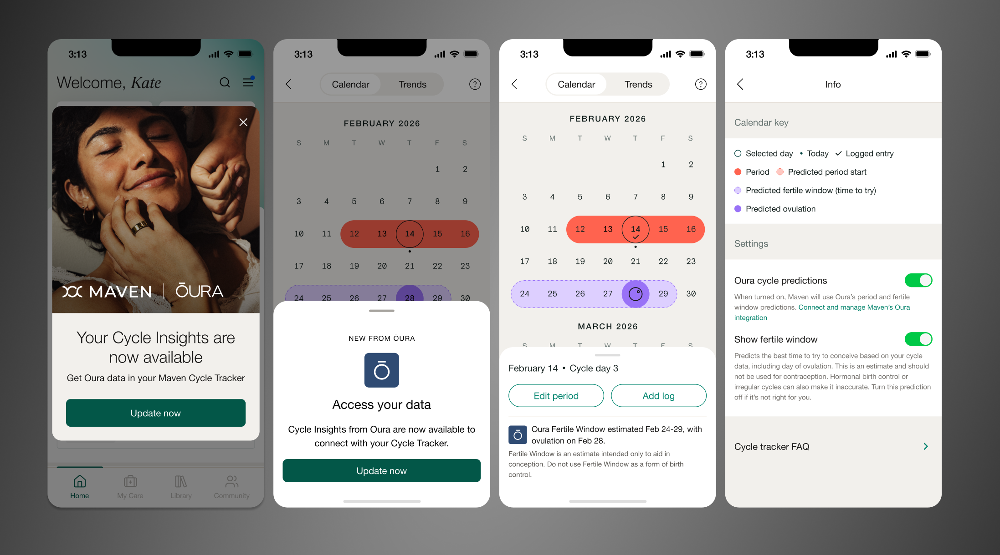
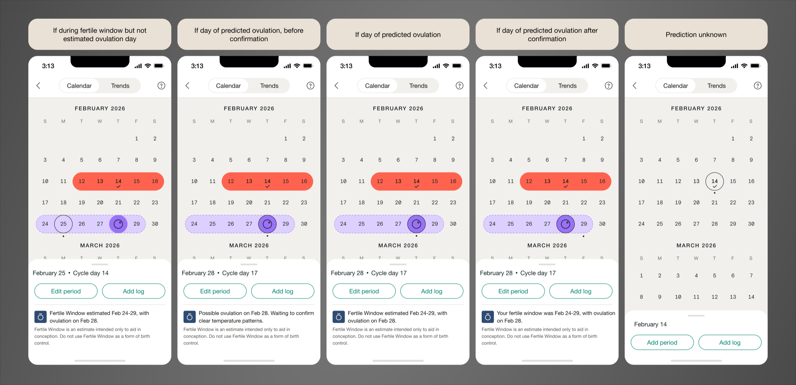
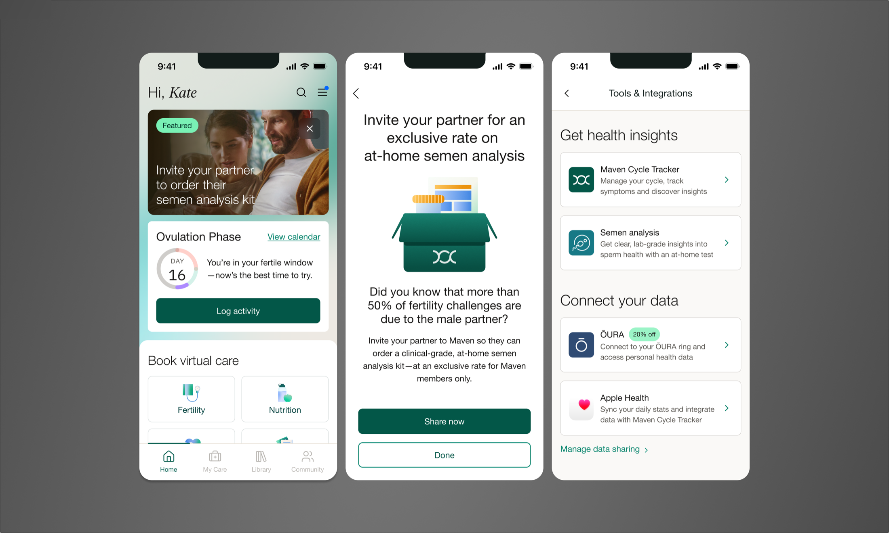

Fertility Experience
Maven Clinic

The problem space
Most people trying to conceive don't lack information, they lack access to it at the right moment. Cycle signals go unnoticed because they're buried instead of surfaced. Diagnostic testing defaults to one partner, leaving a major factor unexamined. Conditions that need a different kind of care get routed through a generic fertility path instead of one built for them. [Read Maven's press release]
My work leading design for the fertility experience at Maven focused on closing those specific gaps: surfacing cycle data earlier, replacing single point-in-time testing with continuous signal, filling a diagnostic blind spot, and building a path for a condition that doesn't fit the standard model.
Initiative 1: Drive Cycle Tracker adoption & retention
The homepage widget I designed is the top content unit on Maven's Fertility homepage, seen by roughly 30% of all Maven users, and the primary entry point into Cycle Tracker, the feature driving the most engagement and retention among this segment of users.
The problem
The business needed a way to convert users who hadn't onboarded to Cycle Tracker yet, and to give onboarded users a reason to open the app and keep logging. That data isn't incidental: the insights, and ultimately the support, that can drive unassisted conception depend on what a user actually logs.
What I designed
This was two product problems in one interface: convert users who hadn't onboarded, retain and drive action for those who had. I designed 12 versions across two tracks, Trying to Conceive and Preconception, each solving for a different moment in the user's relationship with the feature. It shipped on iOS and Android at full fidelity in 2026, with a simplified version for web.
This widget holds the highest-value real estate on the homepage, the top slot every fertility user sees first, which reflects how central Cycle Tracker was meant to be to a user's day-to-day use of the product.

I designed a new card component for Maven's design system, built as a reusable foundation rather than a one-off. I also designed a new way to represent cycle day: a circular indicator that updates dynamically as a user moves through their cycle, instead of a static number or date. Copy stayed short and specific by design, enough to earn a click, not fill space.
Why it works
The widget does three jobs at once: it teaches users what Cycle Tracker actually does and promotes feature adoption, it gives onboarded users a reason to check in regularly, and it routes them to the most relevant action for where they are in their cycle, driving re-engagement.
Because it lives at the top of the Fertility homepage, it reaches the largest possible share of fertility users without requiring them to seek the feature out.
Impact
The widget took the top position on the Fertility homepage and has held it since launch, continuing to serve as the primary driver of Cycle Tracker engagement and onboarding for the ~30% of Maven users in that program, lifting Cycle Tracker onboarding from 18% to 24% of users.
What I'd change
Right now the content knows what phase you're in, but not who you are.
First, tone. Someone eight rounds into trying to conceive needs a different voice than someone on day 10 of their first tracked cycle. Right now they get the same one.
Second, memory. If someone's logged headaches and cramps at this same point in her last three cycles, the app should notice and say something about it, instead of just showing generic phase info. That's the shift I'd want: less about the phase, more about the person.
Initiative 2: Integrate Oura data with Cycle Tracker
Maven kicked off a partnership with Oura in 2025 to bring wearable data into the platform. I picked up that work and took it further as end-to-end designer, building a user-facing and provider-facing integration that pulls Oura's reproductive cycle data directly into Maven's Cycle Tracker. Oura doesn't have a dedicated fertility or symptom tracker. Maven does.
This gave users a way to combine Oura's biometric data with the tracking experience they were already using to try to conceive. The integration is fully built and QA'd, awaiting release.
The problem
Tracking your cycle, whether in Maven or any other app, mostly means logging dates. Dates tell you when your period started. They don't tell you whether or when you actually ovulated, and ovulation is the thing that actually matters for conceiving. Some people turn to ovulation predictor kits to fill that gap, but those come with their own limitations.
Oura already had FDA-approved, clinically verified ovulation data sitting in its platform. That data existed. It just wasn't connected to a fertility care experience where it could actually be useful. Surfacing it to Maven users, and to their Maven care team, meant both sides could see a more complete picture of what was happening in a given cycle, and that's the first real step toward identifying what might be making it hard to conceive.
What I designed
This was a partnership project, which meant designing inside someone else's constraints as much as my own. I worked directly with Oura's Product, Design, Legal, and Compliance teams, alongside my Product and Engineering colleagues, to figure out how their data could live inside Maven's product without compromising either company's standards.

I made ovulation status unambiguous across the product: Fertile Window, Predicted Ovulation, and Confirmed Ovulation each got clear icons, plain-language explanations, and visible Oura sourcing, all fitted into Maven's existing design system rather than a full redesign. Because these were new concepts, I validated comprehension directly: all 20 users tested interpreted them correctly.
From there, I extended the work across the full experience: rebuilt settings to handle the new controls, brought the same data visualization into Maven's EMR so providers see what their patients see, and designed the promotional moments across the app that introduced the integration to users who hadn't connected yet.
Accuracy and sign-off
Cycle Tracker already pulls from multiple sources: user-logged symptoms, Apple Health, and now Oura. I partnered closely with backend engineering to define how conflicting data between sources would be resolved and data would be clearly visualized so users wouldn't see contradictory information.
Every part of the design had to meet the bar Oura needed to feel comfortable putting their name on the release, so I presented the work to their team for multiple rounds of feedback and approval.

Status
The integration is fully built and QA'd, awaiting release, so outcome data isn't available yet. The targets going in: a 20% increase in ovulation-confirmation tool usage, and a contribution toward Maven's broader 32% unassisted conception rate among fertility users.
Initiative 3: Promoting diagnostic testing
Maven partnered with Fellow, which provides at-home semen analysis kits, to address a testing gap in male fertility. I designed the Fertility experience that introduced the offering and moved men through the testing process. It shipped to production across all platforms in late 2025.
The problem
Nearly 50% of infertility cases involve a male factor, but stigma keeps testing rates low. Men often avoid it out of embarrassment, which delays diagnosis and can shift the burden of testing and treatment onto the female partner by default. Fellow's at-home kit removed the clinical friction. What Maven still needed was a path that made men aware of it, comfortable enough to act, and gave female partners a way to introduce it to their partner without friction.
What I designed
I built two paths into the same offering, since the person discovering it and the person completing it aren't always the same user.
For male users: a flow to learn about the Fellow offering and move straight into ordering the kit, designed to lower the barrier of a topic men are often reluctant to engage with at all.
For female fertility users: a parallel flow to learn about the offering and share it with a male partner, so testing could be introduced by someone already inside the Maven experience instead of requiring the partner to seek it out cold.

The centerpiece of the work was a new homepage content unit I created called the Featured Action Card. It sits at the top of the fertility homepage, the same high-value real estate reserved for the most important actions we needed users to take. Given how much resistance exists around this specific topic, the card had to do more than inform, it had to capture attention and create enough urgency to move someone from awareness to action.
Beyond the features: a living prototype
Beyond shipping these features, I built the first functional prototype of the entire Fertility homepage experience in Claude Code. It included a configurable control panel so product, engineering, and business stakeholders could see a real, 1:1 view of any user state.
I set it up as a project in the design team's GitHub repository and kept it updated, so other designers could pull it down and build from it instead of starting from scratch. This helped tie all these projects together into a cohesive fertility homepage experience and strategy.